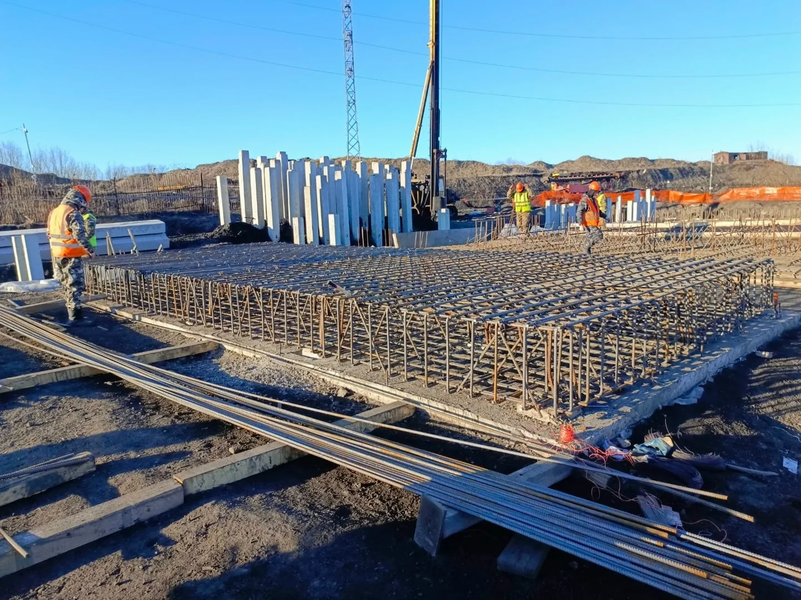

Киров / Карла Маркса
Строительная компания · Киров
Строим новое.
Возрождаем
существующее.
Монолит, кладка, ремонт и реконструкция.
Жилые, коммерческие и общественные здания.
Жилые и коммерческие объектыКировская область
и соседние регионы
и соседние регионы

На наших объектахКаждая деталь
имеет значение.
имеет значение.
СтроительствоРеконструкцияРемонт
01 / Что мы делаем
От основания до отделкиЗадачи разные.
Подход один.
Строительство, ремонт и реконструкция жилых, коммерческих и общественных зданий.

01Монолитные работы
Ленточные, плитные и свайно-ростверковые фундаменты. Возведение стен и перекрытий.
Что входит, этапы и вопросы ↗02Каменные работы
Кладка кирпича и возведение каменных конструкций. Объём и состав работ обсуждаем по вашему проекту.
Что входит, этапы и вопросы ↗03Ремонт и отделка
Капитальный и косметический ремонт существующих зданий. Отделочные работы для жилых и коммерческих пространств.
Что входит, этапы и вопросы ↗04Реконструкция
Новая жизнь существующего здания. Обсудим состояние объекта, вашу задачу и необходимые строительные работы.
Что входит, этапы и вопросы ↗02 / Предварительный расчёт
Без ввода контактовСначала параметры.
Затем — смета.
Узнайте объём и передайте
исходные данные команде.
03 / Порядок работы
Выберите этапОт задачи —
к результату.
Что обсуждаем и согласуем
по ходу вашего проекта.
01
Заявка
Расскажите, где находится объект, какие работы нужны и какие исходные данные уже есть.
04 / Наши работы
Реальные объекты. Реальная работа.За словами —
дело.
Здесь начинается доверие к команде.
Посмотрите, как мы работаем на объектах.
Подробнее
Инта
Работа на объекте
05 / REBORN HOUSE
Люди, которые строятВозрождаем здания.
Создаём пространства.
REBORN HOUSE — команда в сфере строительства и реконструкции. Работаем с частными заказчиками и бизнесом в Кирове и Кировской области.
Возводим жилые дома, коммерческие объекты и общественные здания, ремонтируем и обновляем существующие пространства.
Возможен выезд в соседние регионы. Формат сотрудничества, состав команды и стоимость определяем под задачу объекта.
Подробнее о компанииЧастным заказчикам
и бизнесу
Жилые и нежилые здания
Кировская область
и соседние регионы
Географию выезда обсудим лично
ООО и ИП
Наличный и безналичный расчёт
06 / Для тех, кто в деле
Спецодежда
REBORN HOUSE.
Летние и зимние комплекты в фирменных цветах. Размеры, наличие и актуальная стоимость — в каталоге сообщества.
Открыть каталог в VK07 / Вопросы и ответы
Все вопросы ↗Вопросы до начала работ.
Какие работы выполняет REBORN HOUSE?
Монолитные и каменные работы, ремонт и отделку, реконструкцию зданий. Состав работ обсуждается по задаче конкретного объекта.
С кем работает компания?
С частными заказчиками и бизнесом. Направления включают жилые, коммерческие и общественные здания.
В каких регионах работаете?
В Кирове и Кировской области. Возможен выезд в соседние регионы; условия выезда обсуждаются отдельно. В галерее есть объект в Инте, Республика Коми.
Как начать обсуждение проекта?
Позвоните, напишите по почте или в VK либо подготовьте обращение через форму. Опишите объект и работы, которые планируете.
Что прислать для предварительной сметы?
Адрес объекта, описание задачи, имеющиеся размеры, проект и фотографии. Отсутствующие данные можно отметить в заявке.
Ничего не найдено. Попробуйте другой запрос или задайте вопрос команде.
08 / Начнём с разговора
Киров · Кировская область